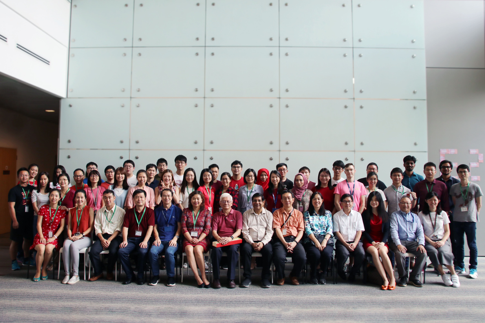
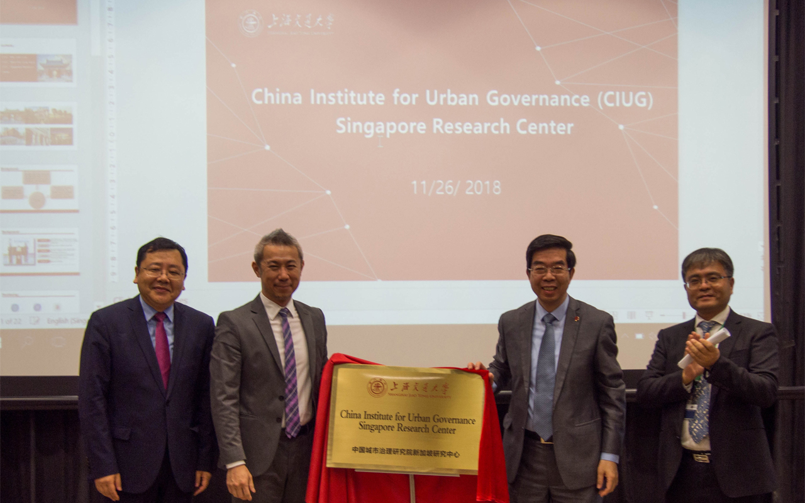
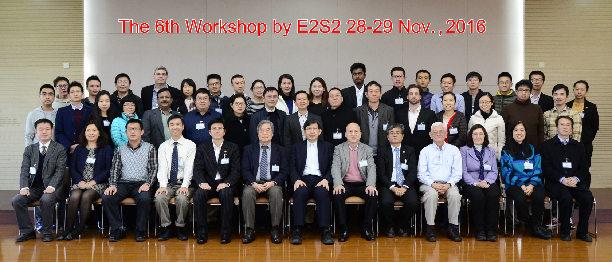
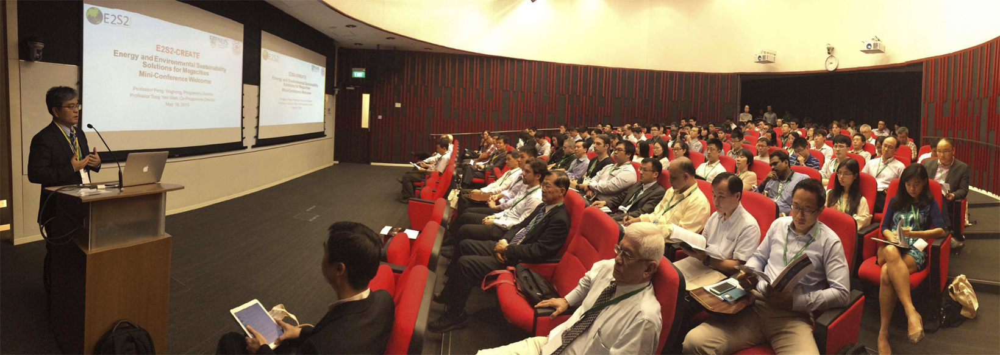
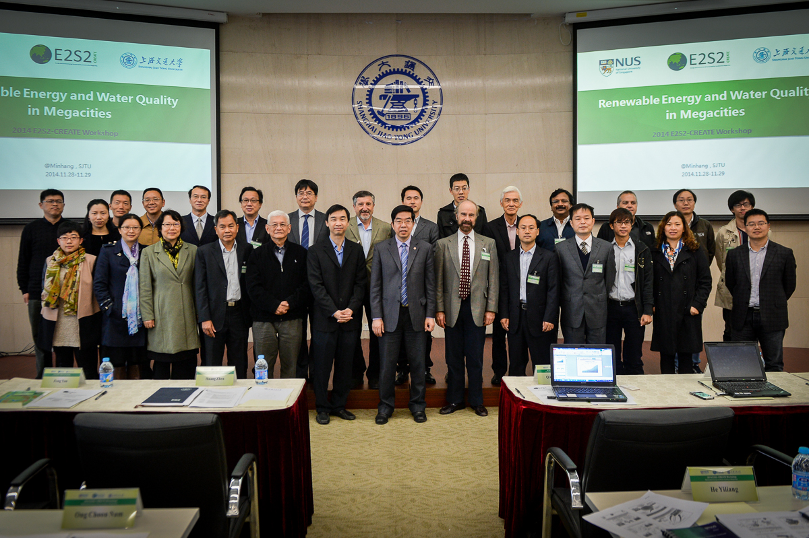
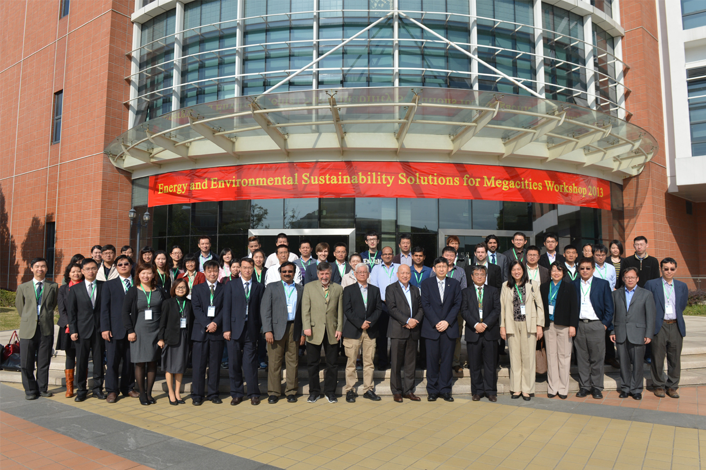

News
CNA: Pilot project to use hawker centre food waste to generate electricity, produce fertiliser (17 Nov 2021)
The Straits Times: East Coast Lagoon Food Village in trial to generate electricity from food waste (17 Nov 2021)
Today: Pilot project at East Coast Park hawker centre turns food waste into electricity and fertiliser (17 Nov 2021)
Today: Why Singapore’s plastic recycling rate is so low and what can be done to raise it (29 Aug 2021)
8频道：狮城有约 | 食在前沿：食物垃圾的转化 (12 Aug 2021)
CNA Commentary: Why does Singapore still lack a recycling ethos? (3 Mar 2021)
Events
.jpg)
E2S2-CREATE and AIChE Waste Management Conference
11th~13th Mar. 2019

E2S2 Celebrates Chinese New Year
19th Feb. 2019

Launch of E2S2 Phase II
26th Nov. 2018
E2S2 Phase II was officially launched in the morning of 26th November 2018. The China Institute for Urban Governance Singapore Research Center (CIUG) was also officially opened at the launch. The launch event was attended by representatives from NUS, SJTU, NRF, government agencies and private sector collaborators.

The Sixth Workshop
28th~29th Nov. 2016

Mid-term Review of Phase I
18th May 2015

Workshop 2014
28th Nov. 2014

Workshop 2013
28th Oct. 2013